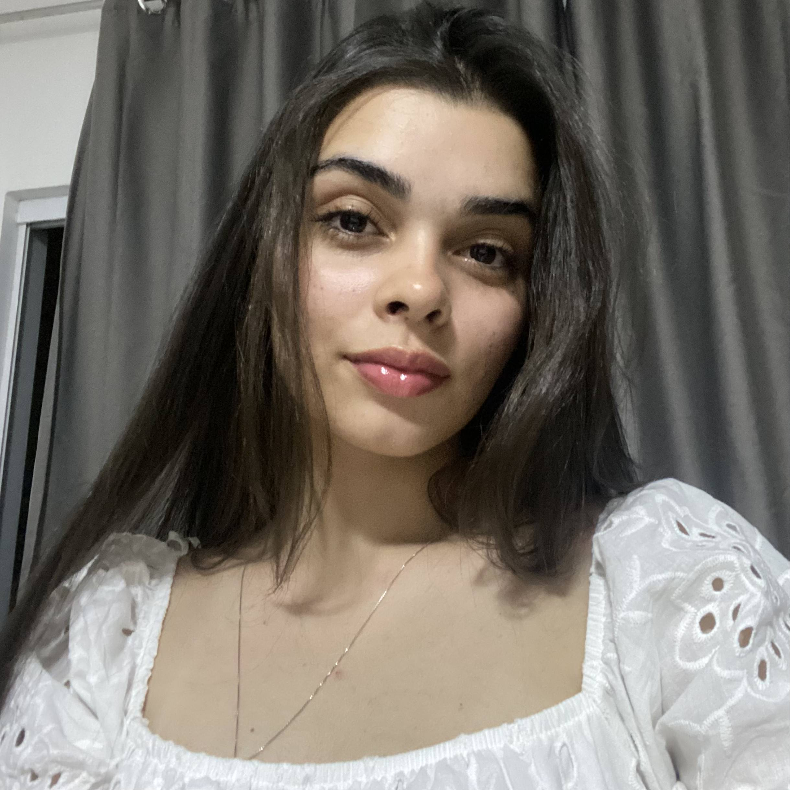
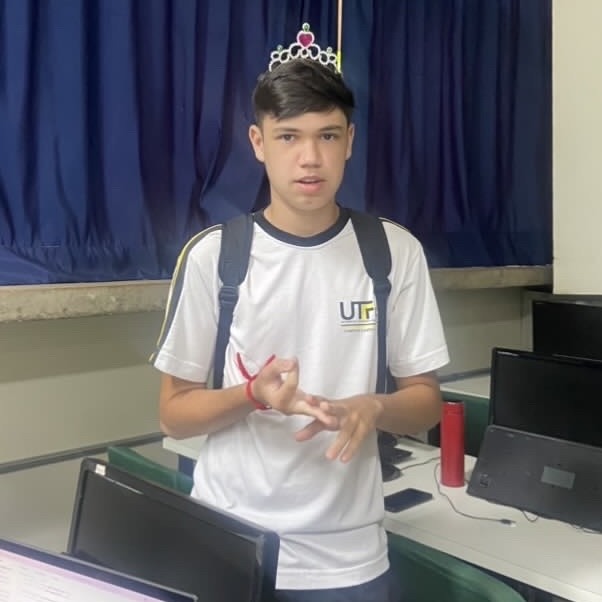

Alunos

Izabelly Bartolini Farias
Meu nome é Izabelly, nasci em Campo Mourão e meus hobbies são cozinhar e ir para a academia, minha principal função nesse trabalho foi fazer o site.
Caio de Oliveira Botelho
Meu nome é Caio, nasci em Campo Mourão e meu hobbie é andar de kart, minha principal função foi fazer os textos presentes no site.
